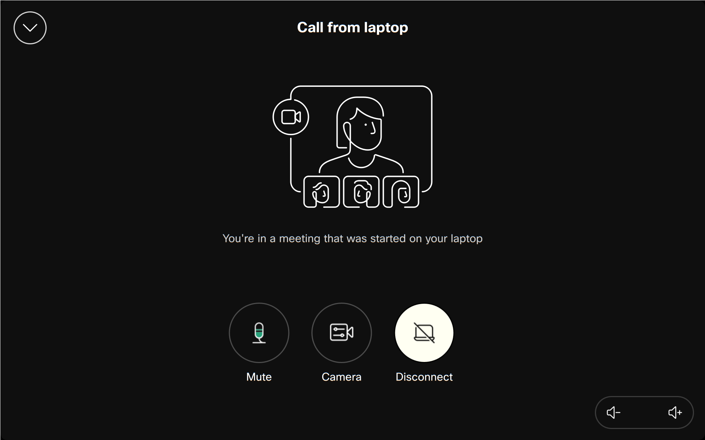

คู่มือการใช้งาน Cisco Room Bar Series
สำหรับการประชุมออนไลน์ที่ต้องการใช้ Cisco Room Bar Series กับ Laptop ที่ใช้ระบบปฏิบัติการ Windows
Windowsการเชื่อมต่อ Laptop และใช้งาน Room Bar เป็นอุปกรณ์เสริม (BYOD Mode)
📌 โหมดนี้เหมาะสำหรับ: การประชุมออนไลน์ที่ต้องการคุณภาพเสียงและวิดีโอที่ดีกว่าจาก Laptop, การแสดงหน้าจอคอมพิวเตอร์ให้คนในห้องดู, การประชุมแบบ Hybrid
ขั้นตอนการเชื่อมต่อและใช้งาน
- เชื่อมต่อสาย USB (สำคัญที่สุด) เชื่อมต่อสาย USB จาก Laptop (พอร์ต USB-C หรือ USB-A) ไปยังพอร์ต USB ที่รองรับบน Cisco Room Bar เพื่อให้ Laptop ใช้กล้อง, ไมโครโฟน, และลำโพงของ Room Bar ได้
- (ทางเลือก) เชื่อมต่อสาย HDMI สำหรับแสดงหน้าจอ หากต้องการแสดงหน้าจอ Laptop และ USB ไม่ได้ส่งสัญญาณภาพ ให้เชื่อมต่อสาย HDMI จาก Laptop ไปยัง HDMI input บน Room Bar
-
รอ Windows ติดตั้ง Driver และปรับการแสดงผล (ถ้าจำเป็น)
โดยทั่วไป Windows จะจัดการโดยอัตโนมัติ หากเชื่อมต่อ HDMI อาจต้องปรับโหมดการแสดงผล (Extend/Duplicate)

ภาพตัวอย่างการเชื่อมต่อสาย (คลิกที่ภาพเพื่อดูขนาดเต็ม)
-
การควบคุมจาก Touch Panel (ถ้าใช้งาน)
เมื่ออยู่ในโหมด BYOD และใช้งานผ่าน Touch Panel คุณอาจสามารถ:
- ควบคุมระดับเสียงของลำโพง Room Bar
- ปิดเสียงไมโครโฟน (Mute) ของ Room Bar
- ข้อจำกัด: การควบคุมวิดีโอ (เริ่ม/หยุดกล้อง), การเลือกเนื้อหาที่จะแชร์, หรือการออกจากประชุม จะต้องทำจากแอปพลิเคชันบน Laptop ของคุณโดยตรง

ตัวอย่างหน้าจอควบคุมบน Touch Panel (คลิกที่ภาพเพื่อดูขนาดเต็ม)
-
การสิ้นสุดการใช้งาน
- หากใช้งานผ่าน Touch Panel: แตะปุ่ม "ตัดการเชื่อมต่อ" (Disconnect) หรือ "หยุด" (Stop)
- โดยทั่วไป: เพียงแค่ถอดสาย USB และ HDMI (ถ้าใช้) ออกจาก Laptop
การตั้งค่าใน Zoom และ Microsoft Teams (บน Laptop)
หลังจากเชื่อมต่อ Laptop และ Room Bar เรียบร้อยแล้ว คุณต้องตั้งค่าอุปกรณ์ในโปรแกรมการประชุมบน Laptop ของคุณดังนี้:
การตั้งค่าใน Microsoft Teams
Audio devices (อุปกรณ์เสียง)
เลือก "Cisco Room Bar ..."
Speaker (ลำโพง)
เลือก "Cisco Room Bar ... Digital Audio"
Microphone (ไมโครโฟน)
เลือก "Cisco Room Bar ... Digital Audio"
Camera (กล้อง)
เลือก "Cisco Room Bar ..."
การตั้งค่าใน Zoom
Microphone (ไมโครโฟน)
เลือก "Cisco Room Bar ... Digital Audio"
Speaker (ลำโพง)
เลือก "Cisco Room Bar ... Digital Audio"
Camera (กล้อง)
เลือก "Cisco Room Bar ..."
 - Copy.png)
หน้าตั้งค่าอุปกรณ์ใน Microsoft Teams (คลิกที่ภาพเพื่อดูขนาดเต็ม)
.png)
หน้าตั้งค่าอุปกรณ์ใน Zoom (คลิกที่ภาพเพื่อดูขนาดเต็ม)
การทดสอบการทำงาน
- ตรวจสอบการรับรู้อุปกรณ์ (บน Laptop) เปิด Device Manager ใน Windows และตรวจสอบว่า Cisco Room Bar ปรากฏในรายการ Audio/Video devices
- ทดสอบกล้อง (ผ่านแอปบน Laptop) เปิดแอป Camera ใน Windows หรือใช้ Test Video ใน Zoom/Teams โดยเลือกกล้องเป็น Cisco Room Bar
- ทดสอบไมโครโฟน (ผ่านแอปบน Laptop) ใช้ Sound Settings ใน Windows หรือ Test Audio ในแอปประชุม โดยเลือกไมโครโฟนเป็น Cisco Room Bar
- ทดสอบลำโพง (ผ่านแอปบน Laptop) เล่นเสียงทดสอบผ่าน Cisco Room Bar Digital Audio จากการตั้งค่าในแอปประชุมหรือ Laptop
- ทดสอบการประชุม ทำ Test Call ผ่านแอปพลิเคชันบน Laptop ก่อนการประชุมจริง
🔧 หากมีปัญหา: ลองถอดและเสียบสาย USB และ HDMI ใหม่, รีสตาร์ทแอปพลิเคชันการประชุม, ตรวจสอบว่าเลือกอุปกรณ์ Cisco Room Bar ถูกต้องในแอปพลิเคชัน, หรือตรวจสอบการตั้งค่าบน Touch Panel (หากใช้งาน)
📧 หากต้องการความช่วยเหลือเพิ่มเติม: ติดต่อทีมสนับสนุนที่
support@seanetasia.com
×